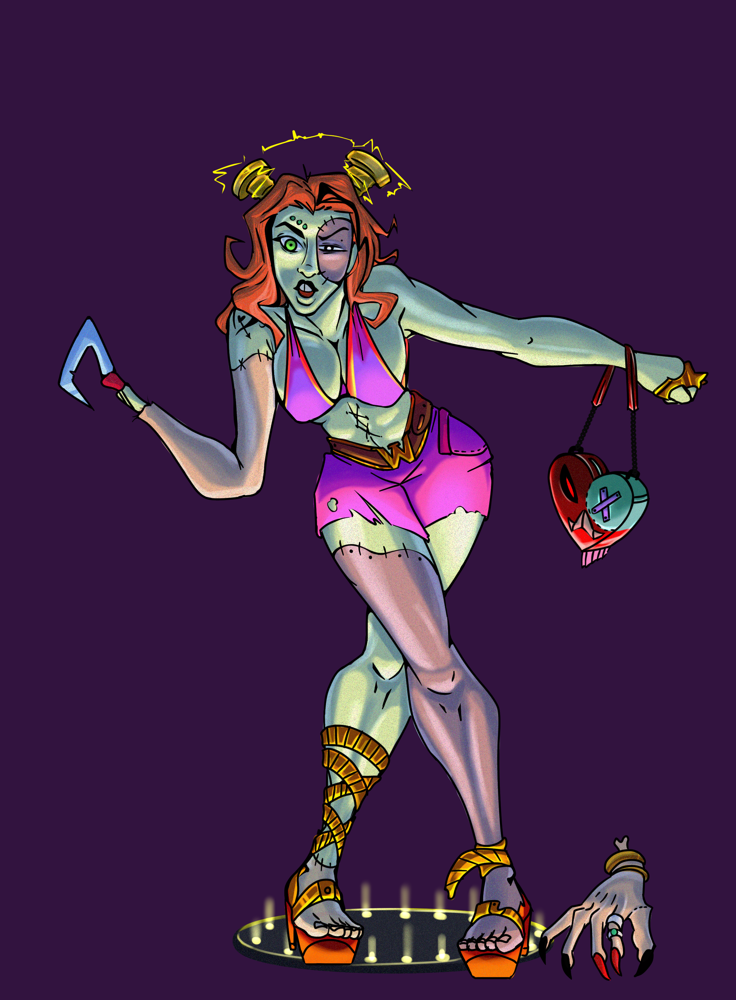

Descripción del trabajo
Mi arte es una exploración constante del diseño de personajes a través del lente de la fantasía, la mitología y el surrealismo.Visualmente, mi estilo se caracteriza por el uso de paletas de colores muy vibrantes y contrastantes.Le doy mucha importancia a la expresividad, la fluidez de las poses y los pequeños detalles en la vestimenta o el entorno de mis personajes.
Herramientas utilizadas
- Ibis paint
- Procreate
- Krita


